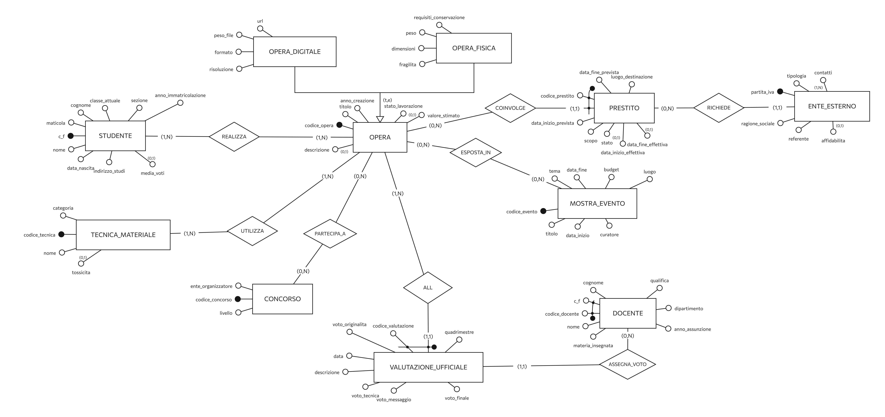
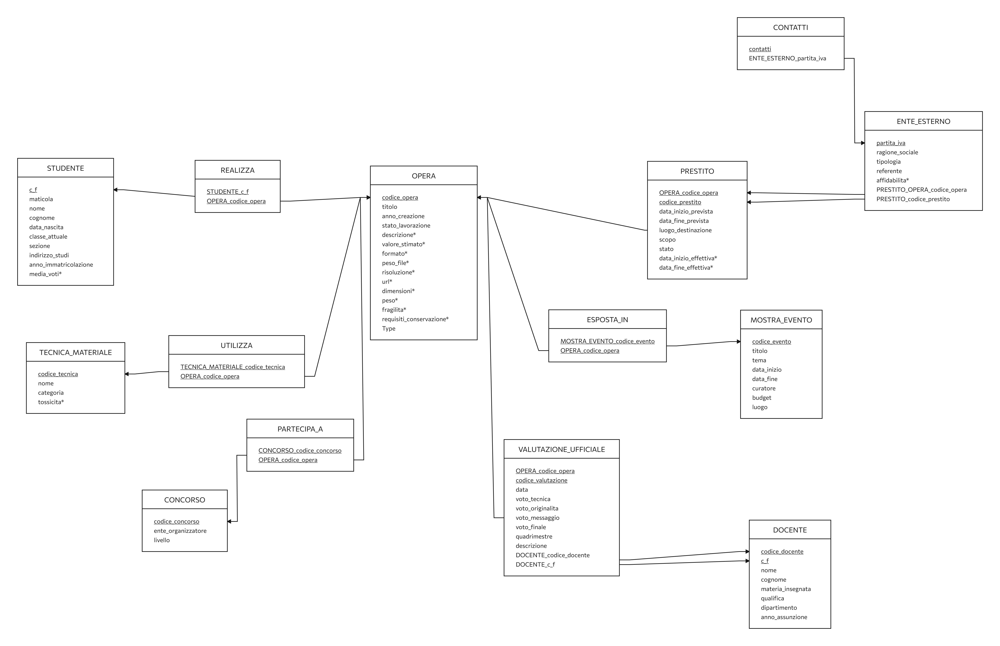

Opere fisiche
Dimensioni, peso, fragilità e requisiti di conservazione sono tracciati per ogni opera fisica, con posizione negli spazi espositivi interni e livello di sicurezza.
Presentazione del progetto di gestione del patrimonio artistico.
Consegna
Gestione: studenti, opere, team collaborativi, materiali, prestiti, spazi, mostre e feedback docenti.
Concept
Codice fiscale, matricola, classe, media e contatti identificano univocamente ogni studente.
Singole o collaborative. Ogni partecipante ha ruolo e percentuale di contributo definiti.
Architettura
Dimensioni, peso, fragilità e requisiti di conservazione sono tracciati per ogni opera fisica, con posizione negli spazi espositivi interni e livello di sicurezza.
Formati, peso file, risoluzione e URL permettono di gestire perfettamente anche le opere contemporanee in forma digitale.
Ogni tecnica o materiale è caratterizzato da codice, nome, categoria e grado di tossicità per monitorare sicurezza e compatibilità.
Salons, corridoi e laboratori interni sono descritti con codice, edificio, piano, tipologia, illuminazione e security level.
I prestiti verso enti esterni sono gestiti con date previste/effettive, destinazione, scopo, stato, corriere specializzato e polizza assicurativa.
Le opere possono partecipare a eventi e concorsi, con tema, curatore, budget, ente organizzatore, livello, esito, premio e menzione speciale.
Critiche formative e valutazioni ufficiali sono separate, con analisi punti di forza/debolezza, voti per tecnica, originalità, messaggio e quadrimestre.
Ogni docente è identificato da codice e codice fiscale, e include nome, cognome, materia, dipartimento, qualifica e anno di assunzione.
Processo
Definizione dei ruoli e delle responsabilità del team.
Creazione dei modelli ER, logico e fisico con iterazioni.
Database e siti di presentazione e demo.
Iterazioni e correzioni
Immagini

Primo diagramma di base senza tabelle dettagliate.

Modello in evoluzione con correzioni e ampliamenti.
STUDENTE(c_f, matricola, nome, cognome, data_nascita, classe_attuale, sezione, indirizzo_studi, anno_immatricolazione) OPERA(codice_opera, titolo, anno_creazione, stato_lavorazione, valore_stimato, c_f) TECNICA_MATERIALE(codice_tecnica, nome, categoria, tossicita)
Schema relazionale con vincoli di integrità.

Modello completo e ottimizzato con tutte le entità.
Prova interattiva
Pianificazione
Timeline aggiornata con i dati recenti del progetto.
{kind=link}
{kind=link}